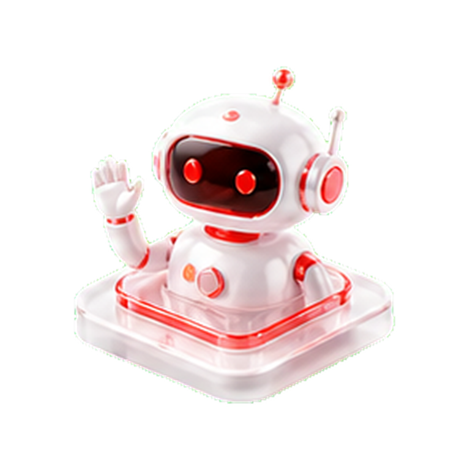
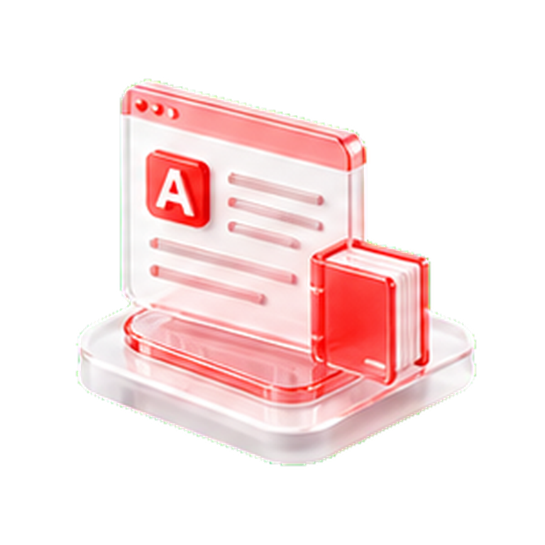

岗位正在升级
AI 正在重塑各类岗位，掌握 AI 能力让你在职场中更具竞争力。
- AI 替代重复性工作
- AI 升级岗位技能要求
- AI 催生全新岗位需求
- AI 改变团队协作方式
- AI 推动岗位能力复合化
从需求到上线全流程
主流场景与平台实操
作业点评与答疑
工具与项目作品
AI 不是遥远的趋势，它已经成为职场能力升级的一部分。
现在开始学 AI，不是追风口，而是在为岗位竞争力、职业发展和收入增长提前布局。
AI 正在重塑各类岗位，掌握 AI 能力让你在职场中更具竞争力。
会用 AI 的人能更快完成任务，把时间放在判断、优化和创新上。
AI 不会取代你，但会放大你的专业价值，让能力更容易被看见。

让你不只会用 AI，更能开发 AI、落地 AI、用 AI 创造业务价值。
掌握从工程基础到项目落地
从 Java、SpringBoot 到大模型 API 集成，建立完整 AI 应用开发能力，把 AI 接入真实业务系统。
让 AI 具备任务执行能力
围绕 Agent、LangChain、LangGraph、OpenAI Agents、Hermes Agent 等内容，学习智能体开发与多 Agent 协作。
实现企业级场景落地
结合 Hadoop、Spark、Ray、RAG、Chroma、Milvus、Dify、n8n 等内容，掌握数据、知识库和自动化流程能力。

用 AI 放大内容与业务效率
面向运营、内容、客服、办公等场景，学习用 AI 提升内容生产、用户分析、活动策划和业务复盘能力。
适合零基础学员、职场新人、大学生、办公人群，以及想了解 AI 但不知道从哪里开始的人。
如果你听过 ChatGPT、DeepSeek、Midjourney，却不清楚 AI 能做什么，这门课将从工具使用、提示词方法到真实场景应用，帮你建立完整的 AI 入门认知。
适合程序员、Java 开发、运维、产品经理、数据分析师，以及有技术基础、想进入 AI 应用开发方向的人。
课程从 Java、SpringBoot、大模型 API，到 Agent、LangChain、RAG、n8n、Codex App 等内容，帮助你从传统开发转向 AI 应用开发，掌握真实工程项目能力。
适合内容运营、新媒体运营、社群运营、电商运营、市场推广、客服、销售及业务负责人。
如果你希望用 AI 提升内容生产、活动策划、用户分析、社群维护和业务复盘效率，这门课可以帮你把 AI 真正用到运营流程里，而不只是只停留在简单聊天和生成文案。
从 Java 工程基础到 AI 应用实战，适合零基础或转型入门的学员。
学习结果：掌握 AI 应用开发基础链路，能完成智能问答、AI 助手、数据处理和基础工作流应用。
立即免费试听基础课程面向真实工程场景，系统提升 Agent、RAG、自动化与多模态应用开发能力。
学习结果：具备企业级 AI 应用开发能力，能交付 Agent、RAG、知识库、多模态和自动化工作流项目。
立即免费试听进阶课程面向运营、内容、客服、市场和办公场景，让 AI 真正服务业务增长。
学习结果：掌握 AI 提升内容产出、运营策划、用户分析和复盘效率，搭建可复用的运营工作流。
立即免费试听运营课程适合零基础快速入门，在短周期内跑通 AIGC 内容生产流程。
适合想系统实操并产出完整作品的创作者，强化从选题到发布的能力。
适合深耕自媒体与长期变现的学员，系统打造可持续运营体系。
学完不只拿证书，更有真实的工作机会和合作资源。
依托昊誉信息多年行业服务经验与合作资源，为优秀学员提供岗位推荐与就业支持，帮助学员更好地匹配 AI 应用开发、运营提效、教育数字化等相关岗位机会。
鼓励老学员推荐朋友共同学习，让更多人掌握 AI 技能，也让推荐人获得相应学习权益与课程优惠。
面向企业、学校、培训机构和教育单位，提供定制化 AI 培训与数字化能力提升服务，帮助团队快速掌握 AI 工具、AI 应用开发与业务提效方法。